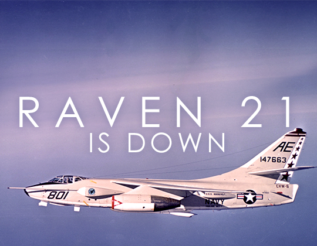

Original Concept By: Mike Mykytyn
Date: 19 January 1976
Location: Gulf of Aden
Playable Side: United States
Duration: 5 Hours
Following improved ties between the USSR and Somalia, the United States has stepped up air and naval patrols in the Gulf of Aden. Approximately one hour ago a Raven 21, a Navy EKA-3B aircraft from VAQ-130 Zappers, was on patrol over the Somalian coast before reporting lock-on from a surface-to-air missile battery. Contact was lost moments later and search-and-rescue beacons were activated shortly afterwards.
The President has given approval to land a small contingent of SEALs and Marines from the Tarawa ARG to locate and secure the crash site until a heli-borne rescue can be launched at dawn with support from the Oriskany carrier group. Tensions are high, and the operation will need to be skillfully conducted in order to avoid an escalation into confrontation between the United States and Soviet Union.